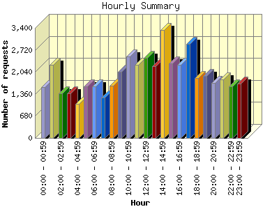
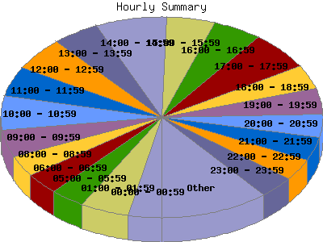

Report generated by Analog 6.0 and Report Magic 2.21
|
Web Server Statistics for "Harish Narayanan (hnarayan) - August 2007" Report generated by Analog 6.0 and Report Magic 2.21 |
The Hourly Summary identifies the level of activity broken down by each hour. Remember that one page hit can result in several server requests as the images for each page are loaded. This summary also compares the level of activity during working hours and after hours as a total for the report time frame.


| Hour | Number of requests | Number of bytes transferred | Percentage of the bytes | Percentage of the requests | |
|---|---|---|---|---|---|
| 1. | 00:00 - 00:59 | 1,565 | 46.464 MB | 3.07% | 3.36% |
| 2. | 01:00 - 01:59 | 2,265 | 90.092 MB | 5.96% | 4.87% |
| 3. | 02:00 - 02:59 | 1,380 | 55.243 MB | 3.65% | 2.97% |
| 4. | 03:00 - 03:59 | 1,375 | 46.919 MB | 3.10% | 2.96% |
| 5. | 04:00 - 04:59 | 1,047 | 43.185 MB | 2.85% | 2.25% |
| 6. | 05:00 - 05:59 | 1,598 | 47.994 MB | 3.17% | 3.43% |
| 7. | 06:00 - 06:59 | 1,596 | 32.958 MB | 2.18% | 3.43% |
| 8. | 07:00 - 07:59 | 1,256 | 44.771 MB | 2.96% | 2.70% |
| 9. | 08:00 - 08:59 | 1,616 | 62.217 MB | 4.11% | 3.47% |
| 10. | 09:00 - 09:59 | 2,034 | 64.248 MB | 4.25% | 4.37% |
| 11. | 10:00 - 10:59 | 2,513 | 79.150 MB | 5.23% | 5.40% |
| 12. | 11:00 - 11:59 | 2,270 | 71.050 MB | 4.70% | 4.88% |
| 13. | 12:00 - 12:59 | 2,484 | 167.647 MB | 11.08% | 5.34% |
| 14. | 13:00 - 13:59 | 2,226 | 73.358 MB | 4.85% | 4.78% |
| 15. | 14:00 - 14:59 | 3,327 | 108.507 MB | 7.17% | 7.15% |
| 16. | 15:00 - 15:59 | 2,295 | 45.047 MB | 2.98% | 4.93% |
| 17. | 16:00 - 16:59 | 2,256 | 73.500 MB | 4.86% | 4.85% |
| 18. | 17:00 - 17:59 | 2,898 | 51.246 MB | 3.39% | 6.23% |
| 19. | 18:00 - 18:59 | 1,844 | 47.818 MB | 3.16% | 3.96% |
| 20. | 19:00 - 19:59 | 1,919 | 63.038 MB | 4.17% | 4.12% |
| 21. | 20:00 - 20:59 | 1,690 | 59.036 MB | 3.90% | 3.63% |
| 22. | 21:00 - 21:59 | 1,810 | 41.062 MB | 2.71% | 3.89% |
| 23. | 22:00 - 22:59 | 1,587 | 42.257 MB | 2.79% | 3.41% |
| 24. | 23:00 - 23:59 | 1,683 | 56.077 MB | 3.71% | 3.62% |
| Work Hours (8:00am-4:59pm) | 21,021 | 744.724 MB | 49.22% | 45.17% | |
| After Hours (5:00pm-7:59am) | 25,513 | 768.160 MB | 50.77% | 54.83% | |
This report was generated on October 30, 2007 16:30.
Report time frame August 1, 2007 00:06 to August 31, 2007 23:56.
| Web statistics report produced by: | |
 Analog 6.0 Analog 6.0 |  Report Magic 2.21 Report Magic 2.21 |